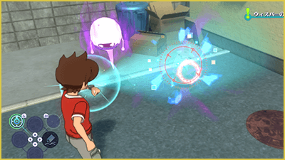
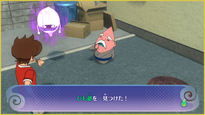
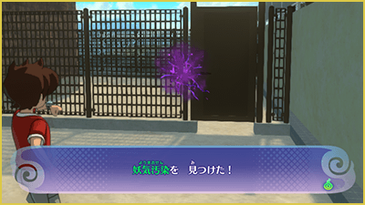
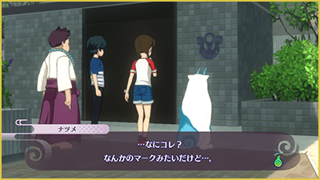
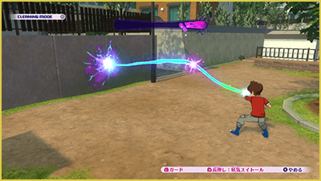
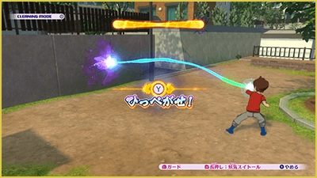
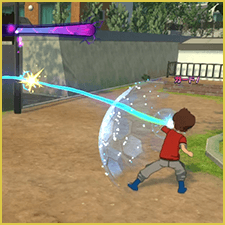

Modo Reloj
Activar Modo Reloj
Mientras mantienes pulsado ZL, cambiarás al Modo Reloj. En este modo, puedes utilizar la luz que emite el Yo-kai Watch para buscar Yo-kai invisibles y otras cosas ocultas.
Mueve la cámara con el stick derecho e ilumina con el foco de búsqueda diferentes lugares.

Cuando encuentres algo, aparecerá un cursor rojo en ese lugar. Si mantienes la luz sobre él, podrás descubrir el Yo-kai u objeto que estaba oculto.

Cosas que puedes encontrar en el Modo Reloj
En el Modo Reloj puedes descubrir todo tipo de cosas, no solo Yo-kai. Estos son algunos ejemplos.
Yo-Gomaldita
En distintos lugares, como las ciudades, puede haber Yo-Gomaldita adherida a diferentes superficies. Si la desprendes mediante un combate de Yo-Gomaldita, podrán aparecer objetos o Yo-kai de su interior.

Zonas Yo-kai
Puede que haya Yo-kai escondidos dentro de cajas de cartón, papeleras y otros objetos que se encuentran en distintos lugares. Examínalos utilizando el Modo Reloj para descubrir los Yo-kai ocultos.
Marcas Mitchy
Hay Marcas Mitchy escondidas por distintos lugares, como las ciudades. Si encuentras una, puede que ocurra algo bueno. Las marcas que hayas descubierto pueden consultarse en la aplicación "Marcas Mitchy" del Yo-kai Pad.

Combate de Yo-Gomaldita (Absorción de Yo-ki)
Puedes desprender la Yo-Gomaldita utilizando la Absorción de Yo-ki manteniendo pulsado ZR. Mueve la cámara con el stick derecho y dirige el rayo hacia la Yo-Gomaldita.
Cuando el rayo de absorción de Yo-ki impacte, comenzará un tira y afloja. Mantén pulsado el botón ZR para llenar el indicador.

Cuando el indicador se llene por completo, aparecerá el mensaje "¡Despréndela!". En ese momento, pulsa Ⓨ para desprender la Yo-Gomaldita.

Bloquear los contraataques
La Yo-Gomaldita de alto rango puede contraatacar al utilizar la absorción de Yo-ki. Observa el ataque del oponente y pulsa ZL en el momento exacto para bloquearlo. Si consigues bloquearlo, el indicador aumentará. Si fallas, el indicador disminuirá.

¿Qué pasa al perder un combate de Yo-Gomaldita...?
Si pierdes el tira y afloja contra la Yo-Gomaldita, serás absorbido por ella. Si hay un Yo-kai dentro, tendrás que enfrentarte a él desde una posición desventajosa dentro de la Yo-Gomladita. Si no hay ningún Yo-kai dentro, serás expulsado fuera de la Yo-Gomaldita.